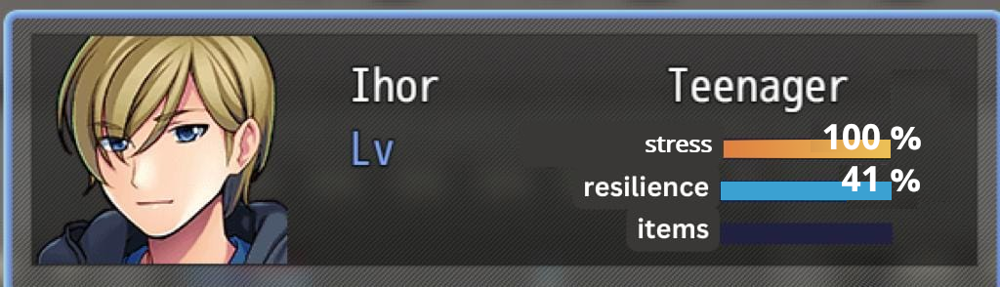

Game Mechanics
Game Structure
The game consists of 6 levels, each of which corresponds to a scene in the protagonist's narrative. Each level uses narrative, interactivity, and exploration to create an immersive environment for the player (De Castell & Jenson, 2003).
Level Objectives and Rules
In each level, the player cannot progress until they have completed the following:
- Interacted with all of the interactable elements
- Looked at all of the artifacts
- Spoken to every interactable character in the room. This unlocks one additional character for interaction. The player returns to speak to this character, triggering the cutscene.
Each interaction acts as a flashback memory. Certain interactions, indicated by a sound and flash of light, give the player solid memories.
- These solid memories are collected as items in the inventory — up to 10 items must be collected before moving to the next level.
- A memory can be a picture, a story, or an item
During cutscenes, the player can make choices that determine whether the scene progresses, but these choices do not determine the outcome of the scene. This limited choice reflects the themes and circumstances in the game's narrative:
- Wrong choice: The scene does not progress (circular).
- Right choice: The remainder of the scene plays out and the player advances to the next level.
Choices during interactions also impact the player’s points on one scale: Resilience
The game's script indicates whether the option will build or take away from resilience:
- 1 option is more self-centered and anxious
- 1 option is calmer and more empathetic
Choices that facilitate emotional resilience, resilient thinking, and recovery — such as creating social connectins, using flexible thinking, or balancing demands — will build resilience (Cornell University).

The player’s statistics window will track 3 measures: Stress, Resilience, Items
Stress measures the state of the environment — while some environments have a higher stress level than others, the stress meter is always set to 100%
- Indicates the challenges that the character is going through at the time
Resilience measures the state of the character, based on their choices — The goal is to get 100% Resilience by the end of the game.
- In each level, the player needs to gain sufficient resilience to meet the amount of stress in that situation.
- The Player will be able to view how choices impact their resilience score, giving them insight into how the protagonist is changing due to these events.
Items measures the player's progress in collecting the memories needed to advance in that level: ie, 8 out of 10
Control scheme
The game uses control schemes, includes mouse, keyboard, or touchscreen, That are efficient and familiar to the user. These mainstream input devices allow the player to focus on the game, instead of learning new controls, leading to an immersive experience.
- Mouse – rotates the character
- Keyboard – initiates forward and sideways movement. Hotkeys provide shortcuts to some of the character’s movements